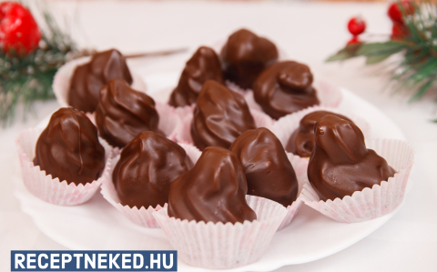
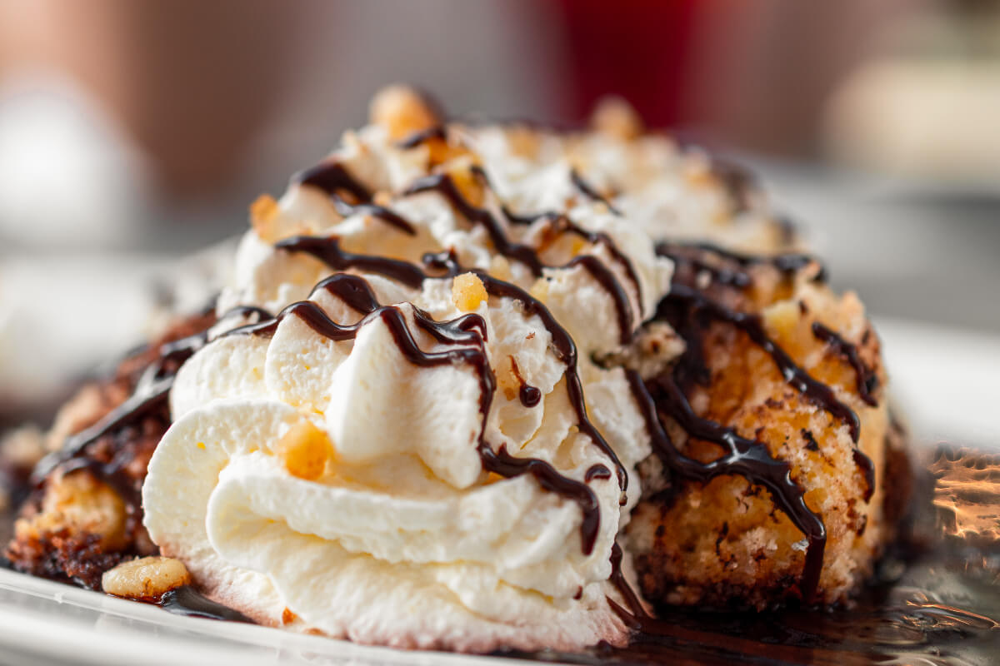
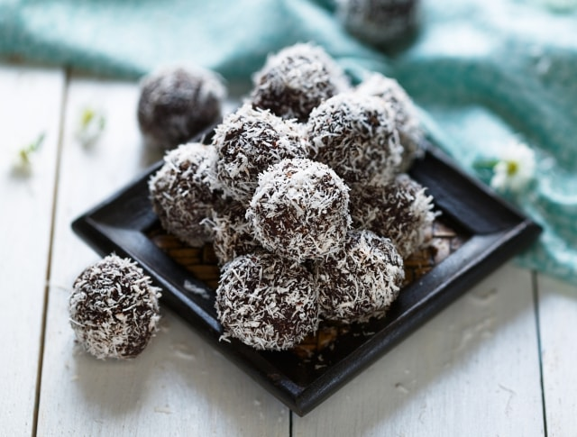

A párizsi csúcs egy igazi retró-süti, tele csokival, de valahogy mégse túl édes. És ráadásul én még Nutellát is tettem bele, gondolván, hogy az semmit nem ront el, és ez egy nagyon finom mogyorós ízt adott neki. Ráadásul egyáltalán nem nehéz elkészíteni, szóval próbáljátok ki mindenképp!
A somlói galuska az egyik kedvenc süteményünk. Sokan, sokféle változatban készítik.
A kókuszgolyó gyerekkorunk óta sokunk kedvenc nassolnivalója, ami jól jön, ha hirtelen jelentkeznek be vendégek, vagy csak épp nem vagyunk a konyha ördögei.
